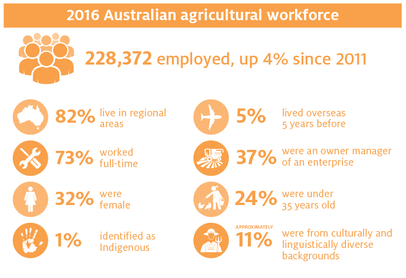

Nurilo is the novel way of connecting workplace and employees - with the interactive features it possesses, finding work on a farm is made easy. Farms simply advertise their farms and prospective employees (you!) are able to apply for a job based on the farm's location, jobs and produce sector. The infographic on the left depicts the stages in the Nurilo application process. Prospective candidates are encouraged to first view the location of the current farms involved in this project, and secondly cross check their CV to the requriments listed. After completing these step, the applicant should apply using the interactive survery - the farms the individual has applied to will receive their application and will endeavour to respond within 1-5 business days. After this period, the applicant will receive status on their application and information regarding their working hours, wages and typical tasks working on the property. Applicants are reminded that each farm possesses different requiremtns and entails differing jobs; as such, each prospective farm should meeting one's abilities.
Nurilo welcomes all applicants regardless of background: race, religion, gender, sexual orientation, and class. Adults, or individuals between the ages of 18 and 60, may submit an application. Youth, or individuals between the ages of 12 and 17, must be of the minimum working age of their country and submit a valid work permit with their application. Alternatively minors may volunteer at Nurilo farms under the supervision of a parent/guardian.
| Adults (18-60) | Youth (12-17) |
| Long-term employment | Mentorship provided |
| Community engagement | Hands-on work experience |
| Sustainability education | Finance-management |
| Daily physical movement | Time management |
| Social skills | Personal growth |
| Personal growth |
Copyright © 2021 Nurilo Team